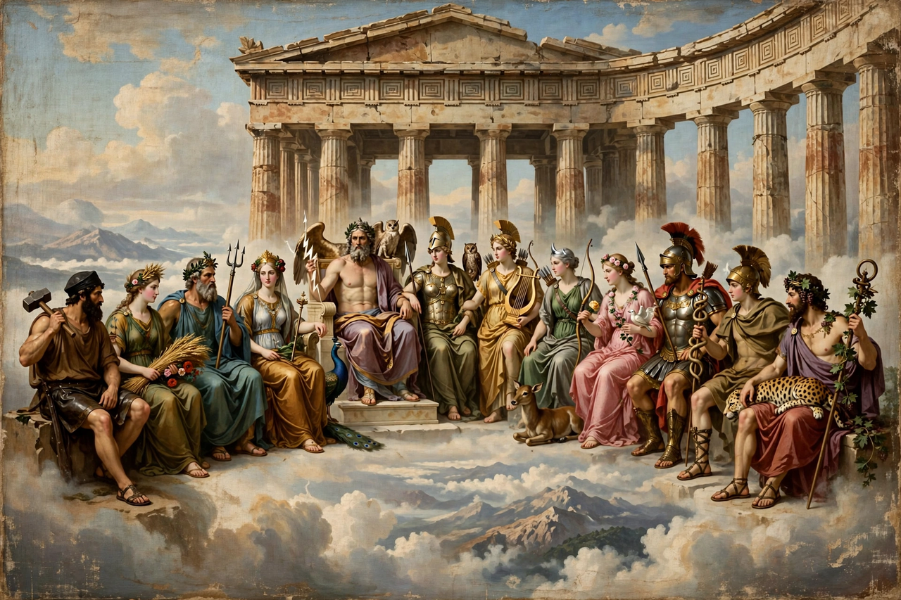

| Greek | Δωδεκάθεοι, Dōdekátheoi |
|---|---|
| Abode | Mount Olympus |
| Members | Zeus, Hera, Poseidon, Demeter, Athena, Apollo, Artemis, Ares, Aphrodite, Hephaestus, Hermes, and Hestia or Dionysus |

The Twelve Olympians, also known as the Dodekatheon (Greek: Δωδεκάθεοι, "twelve gods"), were the principal deities of the Greek pantheon, said to reside atop Mount Olympus. They gained their supremacy after Zeus led his siblings to victory in the Titanomachy, the ten-year war against the elder Titans descended from Uranus and Gaia.
The canonical list comprises Zeus (sky and thunder, king of the gods), Hera (marriage), Poseidon (the sea), Demeter (harvest), Athena (wisdom and war), Apollo (prophecy, music and healing), Artemis (the hunt), Ares (war), Aphrodite (love), Hephaestus (fire and craft), Hermes (travel and commerce), and either Hestia (the hearth) or Dionysus (wine and ecstasy). Hades, though a brother of Zeus and Poseidon, was excluded because his realm was the underworld. In Rome the twelve were adapted as the Dii Consentes, six male and six female, named in a famous couplet by the poet Ennius.
Altars to the Twelve Gods stood at Olympia and in the Athenian Agora, where the altar served as the central milestone from which distances in Attica were measured. The concept of twelve Olympians was fluid in antiquity — Herodotus reports it as an Egyptian inheritance — but the grouping shaped Greek religion, art and literature, from the east pediment of the Parthenon to the Homeric Hymns.
See also: Uranus · Dione · Venus de Milo